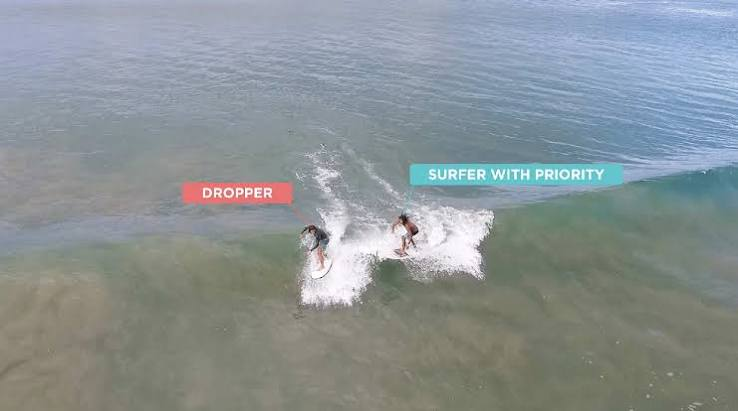
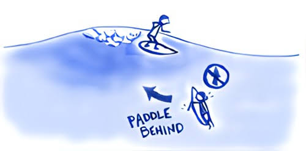

Don’t drop in on someone already riding a wave, as they have priority. Wait your turn and make sure the wave is clear before taking off.

When paddling out, stay out of the way of surfers riding waves and paddle toward the whitewater. I f someone is coming toward you, paddle wide so you don’t get in their path.

The surfer closest to the peak/breaking part of the wave has priority. Always check both ways before paddling for a wave, and don’t take off if someone with priority is already riding it.